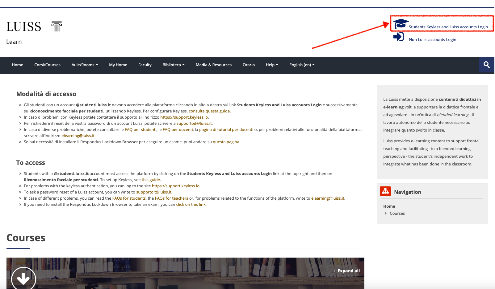
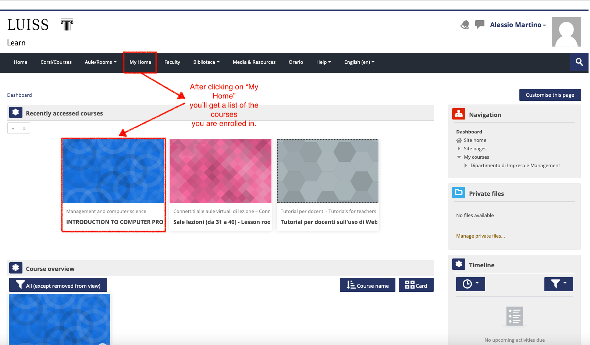
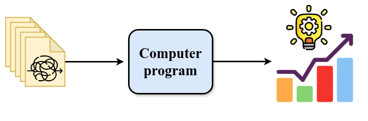
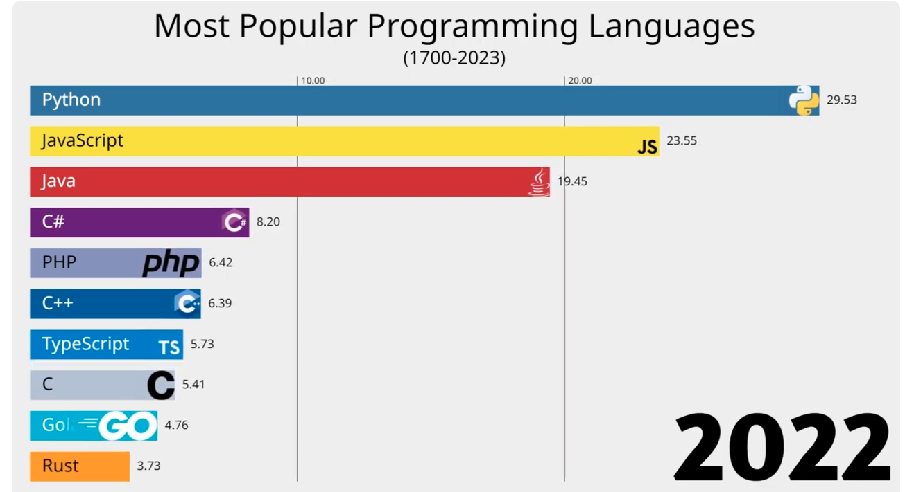

Course overview#
Introduction to computer programming
Management and Artificial Intelligence

Greetings, folks!#
Web Resources and More#
Resources#
Web Resources you should have access to
e-Learning platform#
LUISS Learn is our e-Learning platform.
It is important that you get access!
You’ll find there:
Slides and other teaching material
Exercises
Details on exam dates, reservations, results (besides standard Luiss channels)
Communications from teacher and teaching assistants
{kind=link}

{kind=link}

Personnel#
Teachers#
Teacher: Emilio Coppa
Position: Assistant Professor Tenure-Track @ LUISS
Research topics: software testing, vulnerability detection
Extra: Team Manager of TeamItaly, the italian cybersecurity team
Other info: https://ecoppa.github.io
Office Hours: send me an e-mail so we can arrange a time slot.
Contact:
ecoppa@luiss.it
Teacher: Alessio Martino
Position: Assistant Professor @ LUISS
Research topics: machine learning, big data analysis, computational biology
Office Hours: send me an e-mail so we can arrange a time slot.
Contact:
amartino@luiss.it
Teaching assistants#
TA: Giorgio Piccardo
Office Hours: you can ask info in his first Lab session.
Contact:
gpiccardo@luiss.it
TA: Fabio Angeletti
Office Hours: you can ask info in his first Lab session.
Contact:
fangeletti@luiss.it
Course Info#
Course Goals#
The course is intended to teach basic programming concepts to students with no prior coding experience, developing an attitude towards computational thinking.
It will provide the students with:
an understanding of the role that computation can play in solving problems
the ability to write small programs to accomplish useful goals
Course Roadmap#
The course will familiarise the students with computer programming and will cover the following topics:
Introduction to computation
Introduction to programming languages
Python basics
Variables, data types, expressions
Control structures
Repetition structures
Input / output
Functions and modules
Recursion
Strings
Lists
Dictionaries
Object-oriented programming and classes
Organization#
Lectures + Lab Sessions: Laptops at your fingertips, always!
Monday @ 14:45–16:15
Several rooms in Viale Romania
(often) Lab Session with TATuesday @ 10:00–11:30
A308 (Viale Romania)
(often) Theory lectures & some exercisesWednesday @ 15:45–17:15
A211 (Viale Romania)
(often) Lab Session with TA
Exams#
Written exam:
Coding (60% of the overall grade)
Multiple-choice Tests (40% of the overall grade)
In light of the LUISS Continuous Assessment verification method, we will be having 2 in itinere exams:
First Intermediate Test (tentative date: 23/10/2024)
Second Intermediate Test (tentative date: 26/11/2024)
that replace the Coding test and the Multiple-choice test. Students that will not take (or pass) the intermediate tests during the course are required to take the full test at the end of the course.
Exam structure#
Each intermediate test is a short exam on the topics covered so far. It will consist of a mixture of coding exercises and theory questions (multiple-choice quiz).
Rules (in brief):
the sum of the coding parts between the two tests yields 31
the sum of the theory parts between the two tests yields 31
a score greater than or equal to 16 in each part is enough for successfully passing the coding + theory tests
Extra bonus points:
pass the coding + theory test via intermediate tests, you’ll get an extra bonus point
if you pass the overall exam (coding + theory + group project) within the Winter session, you’ll get an another bonus point
Computer Programming#
Why computer programming?#
Most everyday tasks require to perform:
repetitive…
long sequences of…
simple steps
This scenario is exactly where a computer excels!
Computers are incredibly fast, accurate, and stupid. Human beings are incredibly slow, inaccurate, and brilliant. Together they are powerful beyond imagination.
– Albert Einstein
Why do you need to learn computer programming?#

It give us the means to automatically analyze the data and extract knowledge from it.
Solving a task → Algorithm → Recipe followed by a computer#
An algorithm features:
a sequence of simple steps
flow of control to specify when each step must be executed
a way of determining when to stop.
…just like a recipe!
However, we cannot write an algorithm in our own natural language (e.g., english). To make an algorithm interpretable by a computer, we need to learn a programming language.
Most Popular Programming Languages#

Which Computer Programming Language?#
Benefits:
Easy to learn: designed to be readable, quick to learn
High-level language: abstracting away most low-level aspects of a computer
Large community and great support: several libraries allow to build complex projects with just a few lines of code
Adequate for most tasks: it shows its limits when performance is essential and low-level details play a role. You will hardly work on anything that cannot be implemented in Python